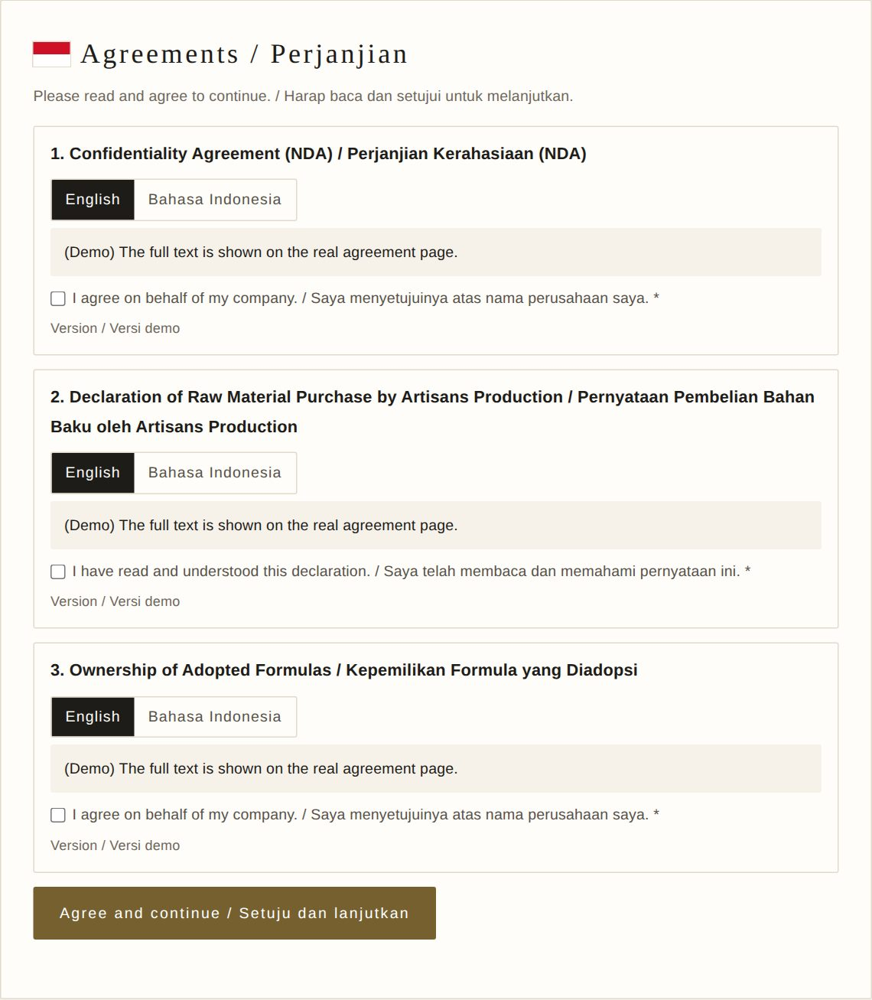
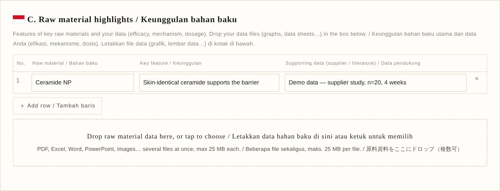
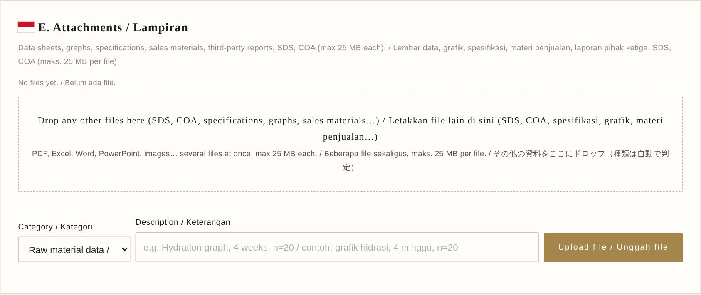
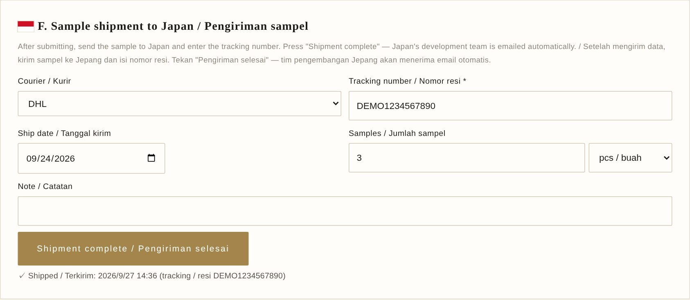
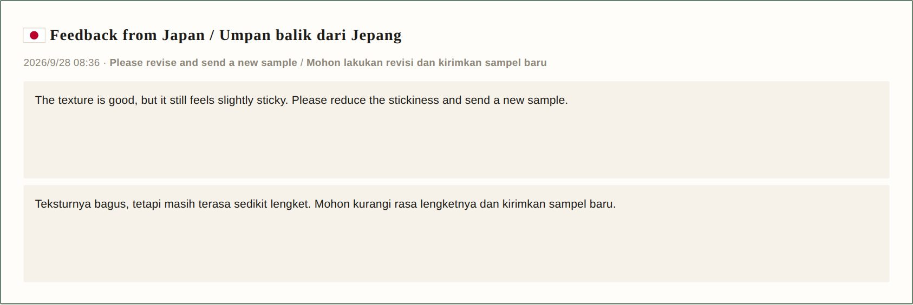
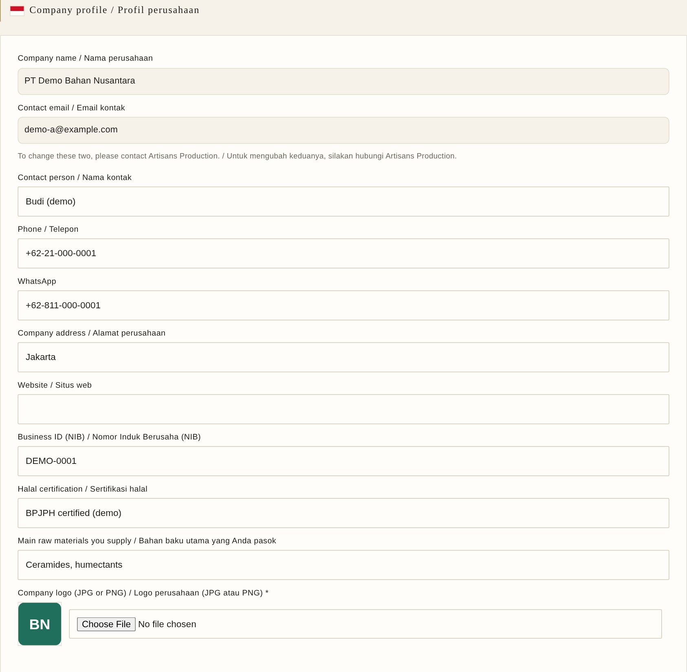

Aplikasi ini menghubungkan tim pengembangan Artisans Production (Jepang) dengan perusahaan Anda: dari permintaan, formula, sampel, hingga umpan balik. ENThis app connects Artisans Production's development team (Japan) with your company: from the request, formula and sample to feedback.
このアプリは、Artisans Production（日本）の開発チームと仕入先をつなぎ、依頼・処方・サンプル・フィードバックまでを一つの画面で進めます。
1Jepang mengirim permintaanJapan sends a request日本が依頼を送る
Buka https://formula-bridge-eight.vercel.app di komputer atau ponsel.
Masukkan email dan kata sandi sementara yang diberikan oleh Artisans Production, lalu tekan “Sign in / Masuk / ログイン”.
Lupa kata sandi? Tekan “Forgot password? / Lupa kata sandi?” untuk menerima tautan atur ulang melalui email. Jika email tidak datang, hubungi perwakilan Anda di Jepang; kami akan menerbitkan kata sandi sementara yang baru.
ENENGLISH
Open https://formula-bridge-eight.vercel.app on a computer or phone.
Enter the email and the temporary password you received from Artisans Production, then press “Sign in / Masuk / ログイン”.
Forgot your password? Press “Forgot password? / Lupa kata sandi?” to receive a reset link by email. If no email arrives, contact your representative in Japan; we will issue a new temporary password.
Artisans Production から受け取ったメールアドレスと仮パスワードを入力し、「Sign in / Masuk / ログイン」を押します。
パスワードを忘れたときは「Forgot password? / Lupa kata sandi?」を押すと、再設定用のメールが届きます。届かないときは日本の担当者に連絡してください。新しい仮パスワードを発行します。
02Menyetujui 3 perjanjian (hanya sekali)Agree to the 3 agreements (once only) ／ 3つの合意書に同意する（初回のみ）

BAHASA INDONESIA
Saat pertama kali masuk, tiga perjanjian ditampilkan: Perjanjian Kerahasiaan (NDA), Pernyataan Pembelian Bahan Baku, dan Kepemilikan Formula yang Diadopsi.
Tekan “English” atau “Bahasa Indonesia” untuk mengganti bahasa.
Centang ketiga kotak, lalu tekan “Agree and continue / Setuju dan lanjutkan”.
ENENGLISH
The first time you sign in, three agreements are shown: the Confidentiality Agreement (NDA), the Declaration of Raw Material Purchase, and the Ownership of Adopted Formulas.
Press “English” or “Bahasa Indonesia” to switch the language.
Tick all three boxes, then press “Agree and continue / Setuju dan lanjutkan”.
Cara termudah: ① tekan “Formula template (Excel) / Template formula”, isi semua sel, lalu ② letakkan file di kotak bergaris putus-putus.
File Excel, PDF, CSV, atau foto (JPG/PNG/WEBP) dengan format Anda sendiri juga boleh (maks. 10 MB). Tabel akan terisi otomatis. Periksa isinya, lalu tekan “Use these rows / Gunakan baris ini”.
Isi semua sel kosong (berwarna kuning). Total harus 100%. Jika Anda memilih g atau mL per batch di “Amount unit / Satuan jumlah”, % dihitung otomatis.
Terakhir, tekan “Convert to Japanese names / Konversi ke nama Jepang” (1–3 menit). Nama Jepang diisi otomatis dan diperiksa oleh Jepang. Jika terlewat, konversi dilakukan otomatis saat mengirim.
ENENGLISH
Easiest: ① press “Formula template (Excel) / Template formula”, fill in every cell, then ② drop the file in the dashed box.
An Excel, PDF, CSV file or a photo (JPG/PNG/WEBP) in your own format also works (max 10 MB). The table is filled in automatically. Check it, then press “Use these rows / Gunakan baris ini”.
Fill in any empty (yellow) cells. The total must be 100%. If you choose g or mL per batch in “Amount unit / Satuan jumlah”, % is calculated automatically.
Finally, press “Convert to Japanese names / Konversi ke nama Jepang” (1–3 minutes). The Japanese names are filled in automatically, and Japan checks them. If you skip this, it runs automatically when you submit.
自社形式のExcel・PDF・CSV・写真（JPG/PNG/WEBP）でも読み取れます（10MBまで）。表に自動で入るので、内容を確認して「Use these rows / Gunakan baris ini」を押します。
空欄（黄色）はすべて埋めます。合計は100%にします。「Amount unit / Satuan jumlah」で g・mL を選ぶと、% は自動計算されます。
最後に「Convert to Japanese names / Konversi ke nama Jepang」を押すと、日本語の表示名称が自動で入ります（1〜3分。日本側で確認します）。押し忘れても、提出時に自動で変換されます。
💡 Anda juga dapat mengetik atau menempelkan langsung di tabel dan menambah baris dengan “＋ Add row / Tambah baris”.You can also type or paste directly into the table and add rows with “＋ Add row / Tambah baris”.表に直接入力・貼り付けもできます。行は「＋ Add row / Tambah baris」で追加します。
08C. Keunggulan bahan baku · D. Data uji pihak ketigaC. Raw material highlights · D. Third-party test data ／ C. 原料の特長 ・ D. 第三者機関の試験データ

BAHASA INDONESIA
C: keunggulan bahan baku utama dan data pendukung (efikasi, mekanisme, dosis).
D: uji oleh laboratorium independen (uji tempel, efikasi, stabilitas, mikrobiologi…).
Punya data bahan baku atau laporan uji dalam bentuk file? Seret dan letakkan (drag & drop) file tersebut apa adanya ke kotak bergaris putus-putus di C atau D. Beberapa file sekaligus boleh (maks. 25 MB per file).
File yang diletakkan di C disimpan sebagai “Raw material data”, di D sebagai “Third-party report”. Semua file terlihat di E. Lampiran.
ENENGLISH
C: features of key raw materials and supporting data (efficacy, mechanism, dosage).
D: tests by independent laboratories (patch test, efficacy, stability, microbiology…).
Have raw material data or test reports as files? Drag and drop them as they are onto the dashed box in C or D. Several files at once is fine (max 25 MB each).
Files dropped in C are saved as “Raw material data”, in D as “Third-party report”. All files appear in E. Attachments.
C に入れたファイルは「Raw material data（原料資料）」、D は「Third-party report（第三者機関の報告書）」として保存され、E の一覧にまとめて表示されます。
09E. LampiranE. Attachments ／ E. 添付ファイル

BAHASA INDONESIA
Cara termudah: seret dan letakkan file lain (SDS, COA, spesifikasi, grafik, materi penjualan…) ke kotak bergaris putus-putus. Jenisnya ditentukan otomatis dari nama file.
Atau pilih kategori, tulis keterangan singkat, lalu tekan “Upload file / Unggah file”.
File yang salah dapat dihapus dengan tombol × di daftar.
Easiest: drag and drop other files (SDS, COA, specifications, graphs, sales materials…) onto the dashed box. The type is set automatically from the file name.
Or choose a category, write a short description, then press “Upload file / Unggah file”.
Remove a wrong file with the × button in the list.
Examples: data sheets, graphs, specifications, SDS, COA, test reports (max 25 MB each).
Setelah sampel siap dan bagian A–E lengkap, tekan “Submit to Japan / Kirim ke Jepang”, lalu “Yes, submit / Ya, kirim”.
Syarat: nama produk terisi, total formula 100%, dan tidak ada sel kosong. Jika ada yang kurang, layar akan memberi tahu.
Formula otomatis dikirim ke Jepang dalam format Excel dan PDF. Anda masih dapat memperbaiki halaman sampai Jepang mengadopsi formula.
ENENGLISH
When the sample is ready and A–E are complete, press “Submit to Japan / Kirim ke Jepang”, then “Yes, submit / Ya, kirim”.
Required: a product name, a formula total of 100%, and no empty cells. The screen tells you if something is missing.
The formula is sent to Japan as Excel and PDF automatically. You can still correct the page until Japan adopts a formula.
日本語
サンプルの準備ができ、A〜E がそろったら「Submit to Japan / Kirim ke Jepang」を押し、確認画面で「Yes, submit / Ya, kirim」を押します。
条件：製品名があること、処方の合計が100%、空欄がないこと。足りないときは画面に表示されます。
処方はExcelとPDFで日本に自動送信されます。日本側が処方を採用するまでは修正できます。
11F. Pengiriman sampelF. Sample shipment ／ F. サンプルの発送

BAHASA INDONESIA
Setelah menekan “Submit to Japan / Kirim ke Jepang” (langkah sebelumnya), kirim sampel ke Jepang, lalu isi kurir, nomor resi (wajib), tanggal kirim, dan jumlah sampel.
Tekan “Shipment complete / Pengiriman selesai”, lalu “Yes, report / Ya, laporkan”. Tim Jepang menerima email otomatis.
ENENGLISH
After submitting (previous step), send the sample to Japan, then enter the courier, tracking number (required), ship date and number of samples.
Press “Shipment complete / Pengiriman selesai”, then “Yes, report / Ya, laporkan”. Japan's team is emailed automatically.
「Shipment complete / Pengiriman selesai」→ 確認画面で「Yes, report / Ya, laporkan」を押すと、日本側に自動でメールが届きます。
12Umpan balik dari JepangFeedback from Japan ／ 日本からのフィードバック

BAHASA INDONESIA
Setelah menilai sampel, Jepang mengirim umpan balik dalam bahasa Inggris dan Indonesia. Anda menerima email, dan umpan balik muncul di bagian atas halaman permintaan.
Keputusan: “Candidate for adoption / Kandidat untuk diadopsi”, “Please revise and send a new sample / Mohon lakukan revisi dan kirimkan sampel baru”, “Not adopted this time / Tidak diadopsi kali ini”, atau “Adopted / Diadopsi”. “Adopted / Diadopsi” berarti formula menjadi milik Artisans Production (perjanjian Kepemilikan Formula yang Diadopsi) dan tidak dapat diubah lagi.
Jika diminta revisi: perbaiki halaman, tekan “Submit to Japan / Kirim ke Jepang” lagi, kirim sampel baru, lalu isi nomor resi yang baru dan tekan “Shipment complete / Pengiriman selesai” lagi.
ENENGLISH
After evaluating the sample, Japan sends feedback in English and Indonesian. You receive an email, and it appears at the top of the request page.
Decisions: “Candidate for adoption”, “Please revise and send a new sample”, “Not adopted this time”, or “Adopted”. “Adopted” means the formula now belongs to Artisans Production (Ownership of Adopted Formulas agreement) and can no longer be changed.
If a revision is requested: correct the page, press “Submit to Japan / Kirim ke Jepang” again, send a new sample, then enter the new tracking number and press “Shipment complete / Pengiriman selesai” again.
判定は「Candidate for adoption（採用候補）」「Please revise and send a new sample（再試作を依頼）」「Not adopted this time（不採用）」「Adopted（採用）」のいずれかです。「Adopted」の場合、処方は合意書（採用処方の帰属）に基づき Artisans Production のものとなり、以後は変更できません。
再試作の依頼なら、ページを修正して再度「Submit to Japan / Kirim ke Jepang」を押し、新しいサンプルを送って、新しい追跡番号を入れて「Shipment complete / Pengiriman selesai」をもう一度押します。
13Menu lainnyaOther menus ／ そのほかのメニュー

BAHASA INDONESIA
“Company / Perusahaan”: ubah telepon, alamat, logo, dll., lalu tekan “Save / Simpan”. Untuk mengubah nama perusahaan atau email kontak, hubungi Artisans Production.
“Translate / Terjemahkan”: menerjemahkan antara bahasa Jepang dan bahasa Indonesia.
“Password / Kata sandi”: ganti kata sandi Anda.
ENENGLISH
“Company / Perusahaan”: update phone, address, logo, etc., then press “Save / Simpan”. To change the company name or contact email, contact Artisans Production.
“Translate / Terjemahkan”: translates between Japanese and Indonesian.
“Password / Kata sandi”: change your password.
日本語
「Company / Perusahaan」：電話・住所・ロゴなどを変更し、「Save / Simpan」を押します。会社名と連絡先メールの変更は Artisans Production に連絡してください。
「Translate / Terjemahkan」：日本語とインドネシア語を相互に翻訳できます。
「Password / Kata sandi」：パスワードを変更できます。
★Tips pentingImportant tips ／ 大切なこと
BAHASA INDONESIA
Semua informasi di aplikasi ini bersifat rahasia (NDA). Jangan bagikan akun Anda.
Aplikasi dapat digunakan di ponsel, tetapi komputer lebih mudah untuk mengisi tabel formula.
Jika ada masalah, kirim tangkapan layar kepada perwakilan Anda di Jepang.
ENENGLISH
Everything in this app is confidential (NDA). Do not share your account.
The app works on phones, but a computer is easier for the formula table.
If something goes wrong, send a screenshot to your representative in Japan.